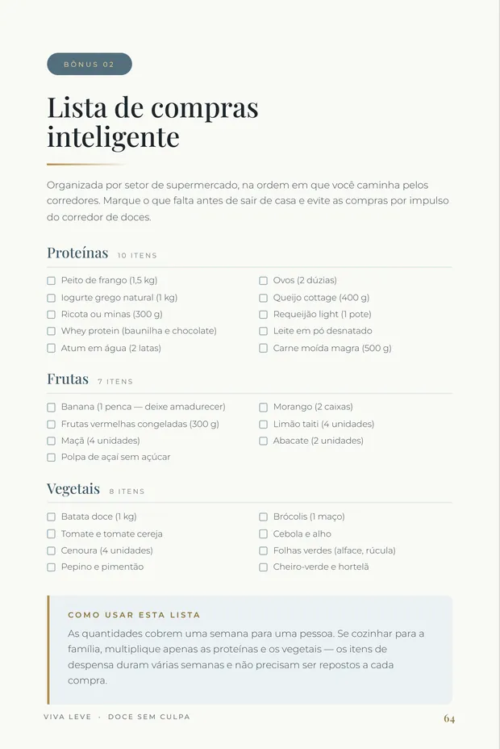

A vontade não avisa. A rotina também não.
Quantas vezes você já pensou: amanhã eu começo?
-
01
A rotina aperta
O dia corre. O tempo some.
-
02
A vontade aparece
Aquele desejo de doce chega quando você menos precisa de mais uma decisão.
-
03
O improviso decide
Você escolhe o que está mais fácil naquele momento.
E se, dessa vez, você já soubesse o que fazer?
O custo invisível
Em uma semana corrida, quantas vezes você acaba comprando algo pronto porque não tinha uma opção?
Talvez o problema não seja falta de vontade. Talvez seja falta de opção.
E se você já soubesse o que preparar antes da vontade aparecer?
O material
50 receitas pensadas para a vida real.
Doces e lanches fitness, fáceis de fazer, com ingredientes acessíveis e o passo a passo que você precisa para ter mais opções na sua rotina.




Capa
Tudo o que você precisa,
em um só lugar.
50 receitas, organização e materiais de apoio para você parar de improvisar.
- 50Receitas
- 25Doces
- 25Lanches
- Ingredientes acessíveis
- Tempo e dificuldade indicados
- Índice clicável
- 3 bônus: lista, cardápio e substituições
Para a vontade de doce.
Para a fome do dia.
50 opções para você não depender da mesma escolha toda vez que a rotina aperta.

- Cheesecake Fit de Frutas Vermelhas
- Mousse Proteico de Chocolate
- Picolé Proteico de Morango
- Panqueca Doce Proteica
+21 receitas doces no ebook

- Coxinha Fitness de Frango
- Pão de Queijo Proteico
- Pizza Fitness de Frigideira
- Wrap Proteico
+21 lanches salgados no ebook
Quem está por trás do Doce Sem Culpa
Dra. Helena Azevedo
Autora e apresentadora do Doce Sem Culpa
O doce não é o vilão da sua dieta.
Conheça no Instagram
Tudo pronto.
Agora é só começar.
50 receitas + 3 bônus para você ter mais opções, menos improviso e uma rotina mais prática.
Doce Sem Culpa
50 receitas + 3 bônus
- 50 receitas25 doces + 25 lanches rápidos
- 3 bônusLista de compras + cardápio de 7 dias + guia de substituições
- Acesso imediatoReceba o material após a compra
Compra segura • 7 dias para exercer o direito de arrependimento
Dúvidas frequentes
Tudo o que você precisa saber antes de começar.
O Doce Sem Culpa é digital ou físico?
Como recebo o acesso após a compra?
Posso acessar pelo celular?
O que eu recebo ao comprar?
Como funciona o direito de arrependimento?
Pronto para parar de improvisar?
50 receitas + 3 bônus para ter mais opções na sua rotina.
R$27,90
Quero agoraAcesso imediato • pagamento único • 7 dias para exercer o direito de arrependimento